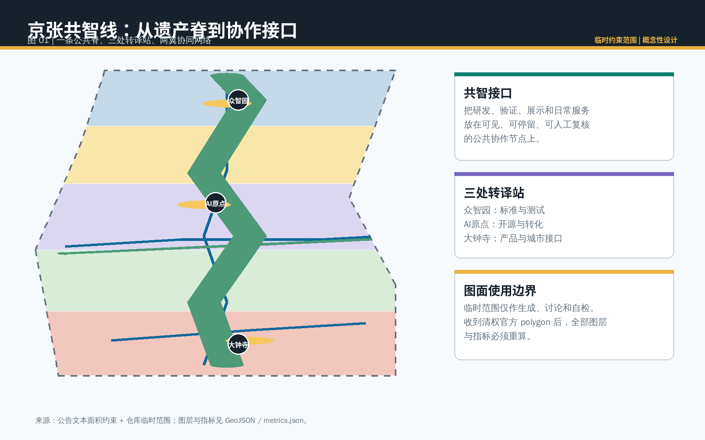
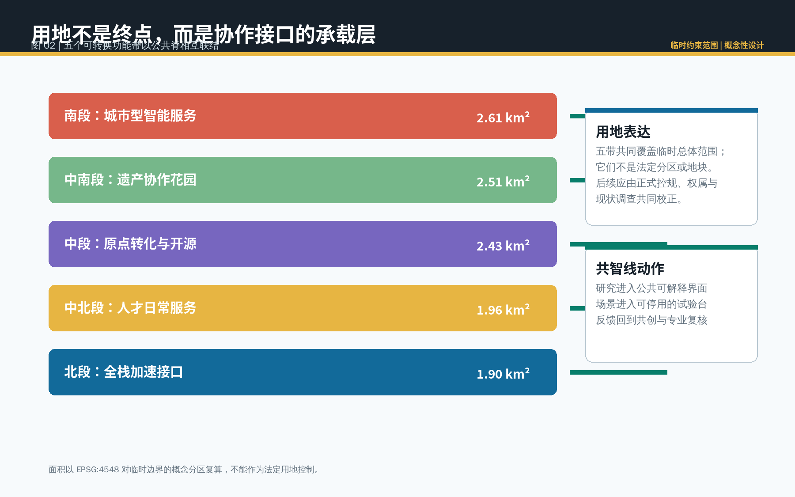
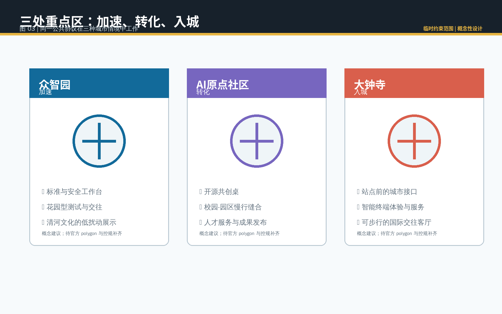
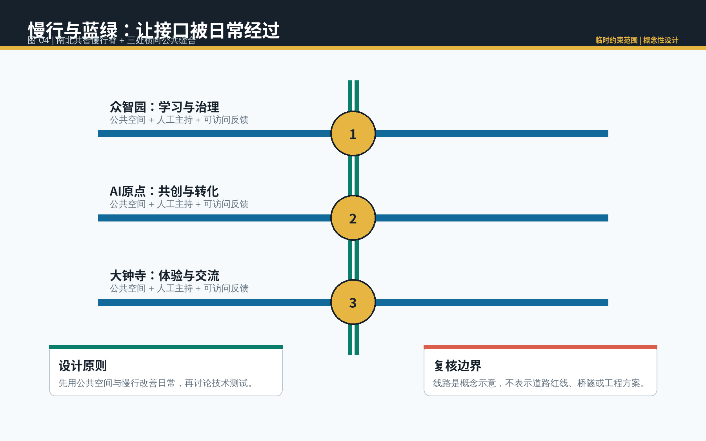
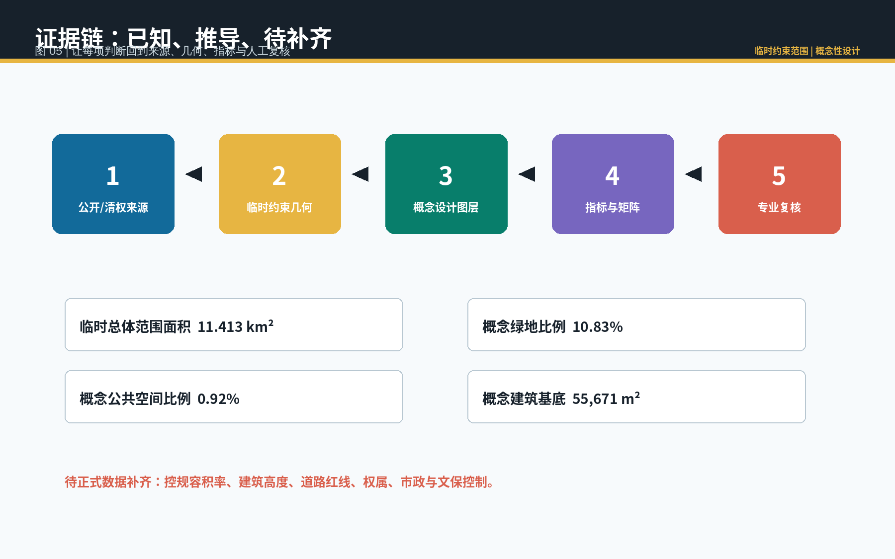

京张共智线 / Jing-Zhang Co-Intelligence Line
以一条遗产公共脊和三处协作接口，把研发、验证、展示与日常服务组织为可解释、可停用、可由专业团队深化的AI创新带概念方案。
京张共智线 / Jing-Zhang Co-Intelligence Line
设计依据与资料清单
“共智线”把百年京张的线性遗产理解为一条公共协作界面，而不是新增规划红线。它提出一套可供专业团队继续校核的空间语言：研究成果在公共空间中被解释，场景测试有人工主持与暂停入口，使用者反馈回到开源社区和专业复核。官方公告用于确认设计任务、三层范围与约面积；面向智能体任务书用于界定开放共创、版权、公共利益和概念建议的边界 来源 来源。
现有公开资料未包含本项目清权的精确 polygon、控规指标、权属、现状建筑和市政容量。本方案仅使用仓库登记的临时粗略边界与公开/清权来源，所有临时范围都在正文、图面和结构化文件中明确标为“临时约束范围”。图 01 将资料、几何、概念图层、指标和专业复核串成同一证据链 来源 深度。

三层范围工作框架
统筹研究范围以公告约 43.6 平方公里为产业生态、文化叙事和三区两翼协同的研究层；总体设计范围以公告约 11.4 平方公里为城市更新、公共空间与交通服务的概念层；三处重点区则分别承担加速、转化和入城的空间验证。三层不是三套彼此割裂的图纸，而是从“谁协作”到“在哪里协作”再到“怎样被日常使用”的递进工作框架 标准 深度。
本包提交的总体范围复算为 11.413 平方公里，但这是根据临时几何得到的可重复读数，不能替代公告文字范围、更不能充当官方红线或精确面积依据。取得清权官方边界后，范围、用地、绿地、公共空间、建筑、道路、分期和全部指标都应整体重算 空间数据 指标。

统筹研究范围产业与未来城市研究
总体概念的中文名为“京张共智线”，英文名为 “Jing-Zhang Co-Intelligence Line”。标识方向是一条由三枚可开启的接口环组成的深青色线，表达铁路遗产、公共协作和可回退的AI服务；它不用企业商标、人物肖像或未授权字体。三大定位被转换为可读的空间关系：京张文化带提供时间轴，都市AI生活体验带提供可停留界面，AI融合创新带提供研究到服务的转译链。
五大功能通过三区两翼形成闭环：众智园承接全栈研发、标准与安全讨论，AI原点社区承接开源协作、人才与成果转化，大钟寺承接城市产品、国际交往与消费体验；中关村科技服务翼提供规则、人才与专业服务，小月河场景赋能翼把经授权的场景观察转译为公共反馈。每一环均为概念建议，不表示已确定招商、资金、用地或政策安排 来源 深度。
生态案例只提炼可转译的机制，而不把异地经验移植为本地事实：Mila 的研究、创业与公共利益政策连接；Vector 的研究、人才与产业采用桥接；AI Singapore 的公共能力与应用试验组织；Barcelona Supercomputing Center 的科研算力协作；赫尔辛基 AI Register 的可解释公共服务披露；STATION F 对遗产建筑、创业服务与公共活动的分层组织。它们共同提示本带应把“场所、规则、主持人和反馈”同时设计，而非只配置办公载体 来源 来源 来源。
总体设计范围城市更新与控规深度城市设计
总体结构以一条南北“共智慢行脊”和三条东西“公共接口缝合”组织：慢行脊把遗产解释、花园停留和场景展示串联；横向接口把片区内部的学习、服务、站点和社区生活接到公共脊上。设计把技术展示后移到有主持、有退出机制的场所，优先改善步行、休憩、无障碍和公共交流。道路图层仅表达概念性网络，不代表道路红线、桥隧或工程线位 空间数据 深度。
城市更新被理解为“接口修复”，而非以拆除为前提的增量开发：可被复用的空间先承载开源工作台、成果展示、人才服务和公共活动；需要进一步评估的载体只标记为“保留、改造或新建选项”，须以权属、现状测绘、结构安全、文保和控规资料为前提。容积率、建筑高度、退线、具体拆改留和工程可行性一律待正式资料补齐 标准 深度。
重点区域详细设计
众智园被设想为“加速接口”：花园型交往空间把全栈研发、可信评测、标准讨论和清河文化解释放在相邻但可区分的场所；开放测试以登记、告知、人工在场和可终止为前提。AI原点社区被设想为“转化接口”：以开源共创桌、成果发布厅、人才生活服务和校区—园区慢行缝合支持从研究到应用的转换。大钟寺被设想为“入城接口”：围绕站点前公共界面、智能终端体验、商业服务与国际交流，把产品进入日常城市生活的责任和反馈变得可见 空间数据 深度。
三处范围的边界均为临时粗略 polygon；因此以上动作只描述适合的空间类型和公共界面，不针对任何确定地块、企业建筑或权属空间作结论。每处均需在下一阶段以正式范围、现场踏勘、无障碍审查、交通组织和公众参与深化，且应保留不部署、暂停或撤回试点的选项。

AI 创新生态、人才画像与 AI+ 场景
五类主要使用者是：开源开发者（需要协作、评测和声誉记录）、高校师生（需要成果转化与安全的跨校交流）、初创团队（需要企业服务与小规模验证）、周边居民与长者（需要低门槛、低打扰的公共服务）、园区与公共空间运营者（需要人工可控的维护与反馈工具）。画像用于检查包容性，不用于画像追踪、商业推荐或个人数据汇集。
十张场景卡把空间、数据、人工复核和运营责任放在同一张可读表内：01 开源发布厅；02 模型评测工作台；03 企业服务导航；04 无障碍慢行断点复核；05 公共活动安全清单；06 城市记忆导览；07 人才生活服务导航；08 低扰动环境维护协作；09 智能终端体验与投诉回路；10 公共AI规则展台。产业测试验证场景为 02、03、09：均只能使用公开或授权资料，须有明确的测试目的、最小化数据、人工审核、申诉和停止条件，不能写成已批准运营 来源 空间数据。
场景—空间—运营映射如下：众智园承接模型评测与规则展台，AI原点社区承接开源发布、企业服务和人才学习，大钟寺承接终端体验与公共反馈；遗产公共脊承接慢行复核、导览和活动清单。小月河翼的角色是向专业团队提供受控的观察与反馈方法，而非收集个人轨迹或替代公共决策 标准 深度。
用地、建筑规模与拆改留方案
本方案以五个概念功能带完整覆盖临时总体范围：城市型智能服务、遗产协作花园、原点转化与开源、人才日常服务、全栈加速接口。这个分区用于审查空间关系与面积复算，并非土地用途调整建议或法定分区。用地编码采用资料包中的分类术语，任何与正式国土空间用途管制相关的结论应由正式图则和专业团队确认 标准 空间数据。
建筑图层只列出六处概念性承载点，分别记录“保留、改造或新建选项”。概念建筑基底面积可由图层复算，但不表示建筑规模、容积率、投资或建设承诺；在缺少官方控制条件时，建筑高度、开发强度与拆改留均保持待正式资料补齐。这样可把设计重心从虚构的数值控制转回可持续的公共接口与适应性更新 空间数据 指标 深度。
交通、轨道、市政与公共服务设施
交通策略优先把既有站点、步行、自行车、无障碍和非机动车停放作为公共协作的基本条件：南北共智慢行脊串联三处重点区，三条横向接口分别服务众智园、AI原点和大钟寺的日常进入。算法可以辅助整理公开资料和人工反馈中的断点线索，但路线判断必须由交通、无障碍、运营与公众参与程序复核；不以自动推荐替代现场调查 来源 空间数据。
市政与新型基础设施遵循“先确认容量、再讨论部署”的原则。可在专业深化阶段研究可维护的网络接入、公共充电、低功耗传感、数据告示和人工值守点，但本方案不对能源负荷、管线、通信容量、停车数量或工程方案做结论。公共服务设施应把数字服务与线下人工入口并置，保证不使用智能终端的人仍能获得同等服务 深度 深度。

蓝绿空间、公共空间与城市风貌
蓝绿网络的核心不是把绿地装饰成科技背景，而是把遗产步行、停留、遮荫、无障碍和公共交往设为场景测试的前提。概念绿地比例为 10.83%、概念公共空间比例为 0.92%，均从临时边界和本包设计图层复算，反映的是方案表达中的空间配比，不是正式控制指标 空间数据 指标 指标。
三处“AI朝圣”节点是标准与安全工作台、开源共创桌、城市接口客厅。它们并非纪念性大体量地标，而是能让公众看见贡献、责任、署名和人工复核的低扰动公共组件：工作台展示规则与测试边界，共创桌容纳面对面讨论，接口客厅提供体验、投诉和回访入口。配套导视用接口环、年份刻度和开放贡献记录串联京张铁路、中关村创新文化与AI新文化 标准 深度。
更新项目清单、实施政策与分期计划
项目清单分为三个学习阶段，而不是承诺性的建设时序。近期先在AI原点社区建立共创桌、无障碍步行复核和公开服务导航；中期在众智园深化标准与安全工作台、花园型交流与经授权的测试规则；远期在大钟寺研究站点前公共服务、产品体验和国际交流界面。每一阶段都需要正式范围、权属、资金、运营、安全和公众意见的前置核验，并可根据结果暂停、调整或不实施 空间数据 深度。
长期运营建议采用“共智季”而非一次性节庆：春季开源贡献周、夏季公共场景开放日、秋季可信AI与无障碍复核周、冬季年度知识归档与全球同行交流。开发者社区维护场景规则、版本记录和开放问题；公共空间运营方维护主持、告知和反馈；专业团队审核空间、数据和安全边界。活动品牌、国际传播、人才合作和企业转化均是可供后续主体讨论的运营建议，不构成政府或投资承诺 来源 深度。
指标体系、面积复算与合规矩阵
本方案区分三类指标：公告提供的范围面积，临时几何可复算的概念空间量，以及待正式资料补齐的法定控制量。总体范围、五类用地、绿地、公共空间、概念建筑基底、慢行网络长度和三处重点区数量均有 GeoJSON 与 EPSG:4548 公式；容积率、建筑高度、道路红线、权属和市政容量明确标为未知。这个区分防止临时图形被误读为控制性规划事实 指标 指标 深度。
任务覆盖矩阵回应公告工作内容与 agent.1—agent.6；专业标准矩阵响应城市设计、控规深度与用地分类；设计深度矩阵把现状诊断、结构、交通、蓝绿、三处重点区、项目清单、分期、指标与风险分别连接到正文、图层、图纸和自检。图 05 展示“来源—临时约束—概念图层—指标—人工复核”的链条，避免任一视觉成果单独承担权威性 来源 深度。

风险、版权与合规说明
主要风险包括：临时边界的位置与精度不足，缺少控规和现状资料，AI场景可能带来过度监控或不当自动化，公共空间的可达性与运营资源需要现场确认。对应处理是：不宣称官方批准，不采集未授权个人资料，不把算法输出作为决定，不把概念线路当作工程方案；每个测试应有目的限制、最小数据、人工复核、申诉、记录与停止条件。正式数据到位后必须重新生成图层、图纸、HTML、指标和自检结果 来源 深度。
正文、几何、图件、PDF 和离线网页由声明的 AI agent 生成；引用的公开或清权资料、使用边界与检索日期记录在 sources.json。未使用企业标识、人物肖像、商业底图或远程图片。版权声明说明本包的 CC BY 4.0 许可与资料限制；最终规划、工程、投资和审批判断仍由具有相应资格的专业团队和法定程序负责。
参考资料
1. 北京市规划和自然资源委员会海淀分局，《百年京张AI创新带城市设计国际方案征集资格预审公告》，2026-05-09。 2. 面向全球智能体开展百年京张AI创新带城市设计开源征集任务书摘录，用户提供并清权的规则摘要，2026-05-18。 3. 住房和城乡建设部，《城市设计管理办法》，2017。 4. 住房和城乡建设部，《城市、镇控制性详细规划编制审批办法》。 5. 自然资源部，《国土空间调查、规划、用途管制用地用海分类指南》，2023。 6. Mila、Vector Institute、City of Helsinki AI Register、STATION F 等机构公开网页，访问日期 2026-08-11；用途仅为机制比较，详见 sources.json。
以上书目记录了本方案的主要判断来源，完整的许可、使用边界与获取日期以结构化来源清单为准 来源。